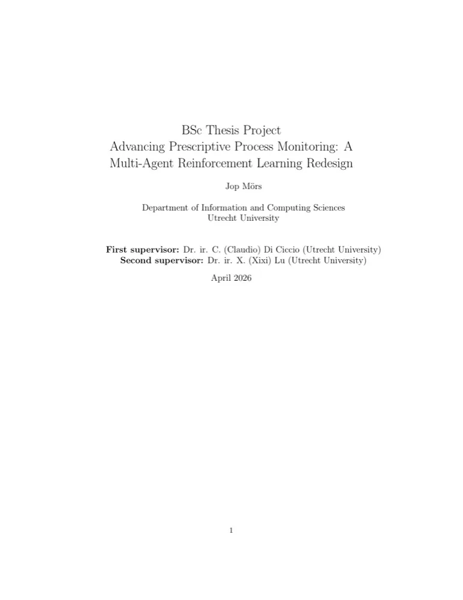

MASTER-X.
Advancing Prescriptive Process Monitoring: a Multi-Agent Reinforcement Learning Redesign. What happens when every person in a business process gets to decide for themselves whether to take the next task?

- Degree
- BSc Information Science
- University
- Utrecht University
- Supervisors
- Dr. ir. C. Di Ciccio · Dr. ir. X. Lu
- Grade
- 8.1 · 15 EC
- Finished
- April 2026
The question
How do reward design and algorithm architecture affect whether agents learn to share the work well?
-
RQ1
Does an immediate skill-match reward beat a delayed completion reward?
-
RQ2
Which architecture fits cooperative task assignment: a centralised critic (MAPPO, COMA) or value decomposition (QMIX)?
-
RQ3
Which properties of the coordination game decide whether an algorithm converges or fails?
The approach
One agent per person.
The problem
Reinforcement learning for business processes almost always assumes one decision-maker with a complete view. Real processes are run by many people, each seeing only their own corner. A single-agent formulation cannot express who should act, or what it costs when two people reach for the same task.
The redesign
MASTER-X builds on MASTER, a simulation where every human resource is its own agent. Each agent decides at every step whether to volunteer for the upcoming task. I redesigned the reward so it fires at assignment instead of completion, and gave the agents a skill-advantage signal and a queue-load fraction to observe.
The comparison
Three algorithms, because they solve credit assignment in three different ways. MAPPO uses a centralised critic with decentralised actors, QMIX uses monotonic value factorisation, and COMA uses a counterfactual baseline. COMA is my addition; the other two came with MASTER.
Why it is hard
It is a volunteer's dilemma. If everyone else volunteers, passing is the rational move for you, because the task gets covered anyway. That equilibrium is stable, it gets more stable as agents are added, and whether an algorithm can break it turns out to be the whole story.
Under the hood
A reward that fires at the right moment.
In MASTER, agents were rewarded when a case completed, often hundreds of steps after the decision that mattered. In MASTER-X the reward fires the moment a task is assigned, based on how fast the chosen agent usually is compared with everyone else:
R = −tanh( 2 · (median_agent − median_all) / median_all )
A much faster agent earns close to +1, an average one 0 and a much slower one close to −1. It draws on relative performance evaluation, reward shaping and robust medians.
Data
Two event logs.
A small synthetic process to learn on, and a real one from a Dutch bank to see whether it holds. Training used 50-case episodes, at most 300 of them, with early stopping and a chronological 80/20 split.
Results
One works. Two fail, interestingly.
MAPPO
Converges within about 15 episodes and closes 65% of the gap between random assignment and the BestMedian oracle — with a median task time of 13.4 minutes against the oracle's 15.4, and without dumping every task on one person.
COMA
Its counterfactual baseline holds the other agents fixed, so it never breaks the free-riding equilibrium and falls into a degenerate policy. On the larger BPI 2012 log its critic diverges to around 10⁹.
QMIX
Its Q-values encode a real preference for faster agents, but it trains on 50-case episodes and is evaluated on 200. The longer episodes saturate the queues of the agents it prefers. A generalisation failure, not a learning failure.
Exact numbers
Loan application · task processing time in minutes, test split
QMIX's numbers look strong here, but it fails at evaluation on longer episodes; see above. On BPI 2012, MAPPO reaches a median of 1.22 minutes against 2.19 for random assignment.
Conclusion
“Reward immediacy matters more than algorithm choice.”
Reward timing comes first
With a delayed completion reward, all three algorithms behaved like random assignment. A reward at assignment time is a prerequisite for learning anything at all.
A centralised critic is necessary
Among the algorithms that do learn, only the one with a centralised critic escaped the volunteer's dilemma. It is not merely better; the cooperative structure of the game requires it.
Heuristics stay hard to beat
BestMedian is fast but routes everything to a handful of people: 6 of 52 resources on BPI 2012. MAPPO spreads work over four people, which makes it far more deployable.
Future work: curriculum learning with growing episode lengths for QMIX, entropy regularisation or explicit cooperation incentives against COMA's collapse, applying the new reward to the original MASTER, and testing more process shapes.
Read the thesis.
The full text, with the literature review, the research design, every result and the discussion.
- Python
- PyTorch
- PettingZoo
- Gymnasium
- pandas
- SciPy
- pm4py
- Matplotlib